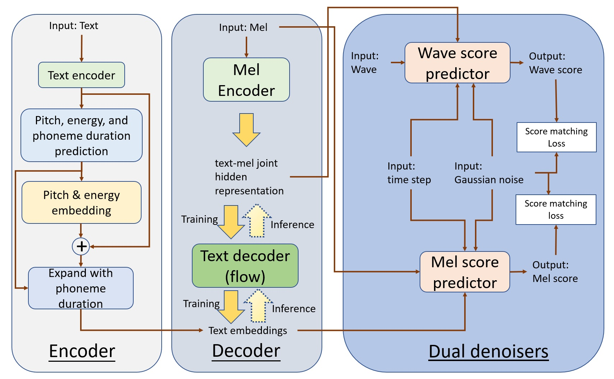

Anonymous.
This demo introduces ITON, which is an end-to-end speech synthesis based on solving It\^o stochastic differential equations (SDE).
This paper proposes an end-to-end speech audio generation model called ITON based on Ito stochastic differential equations (SDE). At the time of inference, ITON takes raw text as input and corresponding voice as output, and there is no process of generating mel-spectrogram in the middle. ITON uses an encoder-decoder-dual denoisers structure. The function of the encoder is to learn the representations of the text, pitch, and energy information to obtain the embedding of the prosodic text. The decoder is used to find the mapping between the text and mel-spectrogram hidden representations. The main denoiser of the dual is used to predict the gradient of a certain wave's log probability (a.k.a score) on the wave data manifold. The auxiliary denoiser is used to fill the information gap between text and wave, and it is used to calculate the gradient of the log probability of mel-spectrogram. The diffusion processes in the two denoisers are based on Ito SDEs. Experimental results show that ITON achieves state-of-the-art MOS of 4.51 on public data set LJSpeech.

Please check the following singing voice samples synthesized by RealSinger and other compared systems. The corresponding lyrics are as follows:
1. but they proceeded in all seriousness, and would have shrunk from no outrage or atrocity in furtherance of their foolhardy enterprise.
2. three cars for press photographers, an official party bus for white house staff members and others, and two press buses.
3. a base station at a fixed location in dallas operated a radio network which linked together the lead car,
4. the lifting had been so complete in this case that there was no trace of the print on the rifle itself when it was examined by latona.
5. with the active cooperation of the responsible agencies and with the understanding of the people of the united states in their demands upon their president,
| Ground truth | FastSpeech2+HiFiGAN | TacoTron2+HiFiGAN | ItoTTS+ItoWave | VITS | ITON |
|---|---|---|---|---|---|
第一个说话人：
1. 第一个栏就严重打栏，最终仅获得第四名，无缘登上颁奖台。
2. 压轴大戏是悬念迭出的女子四乘一百米接力的比赛。
3. 你似乎是这里唯一一个没有把缺点写出来的人。
| 原始真人语音 | FastSpeech 2合成的语音 | TalkingIto合成的语音 |
|---|---|---|
第二个说话人：
1. 外媒，玉林救狗英雄陷骗捐争议，资金去向遭质疑。
2. 为农业增产，农民增收，农村繁荣注入强劲动力。
3. 李万祥会用手机把自己的训练课拍摄下来，传给学员家长。
| 原始真人语音 | FastSpeech 2合成的语音 | TalkingIto合成的语音 |
|---|---|---|
第三个说话人：
1. 他的后半程能力也得到比较大的改观。
2. 它何时能碰到那个检测器，要根据它的质量和电荷。
3. 中国校服为何那么丑，学者教育管理者对性恐惧。
| 原始真人语音 | FastSpeech 2合成的语音 | TalkingIto合成的语音 |
|---|---|---|
第四个说话人：
1. 甘肃天水逸夫实验中学防火防空应急演练时。
2. 董明珠称格力手机今年卖五千万部没有问题。
3. 中国的棒垒球运动将会有更大更广阔的发展空间。
| 原始真人语音 | FastSpeech 2合成的语音 | TalkingIto合成的语音 |
|---|---|---|
第五个说话人：
1. 扩大木结构的行业影响力起到了举足轻宗重的作用。
2. 四每五的城市不能达到新的环境空气质量标准。
3. 其他各省份均未完成氮氧化物年度减排计划。
| 原始真人语音 | FastSpeech 2合成的语音 | TalkingIto合成的语音 |
|---|---|---|
五个说话人说下面同一句话的比较：
听说悟净已经植发治好秃头，有了论及婚嫁的女友。
| FastSpeech 2合成的语音 | TalkingIto合成的语音 |
|---|---|
[1]. Anonymous. ITON: End-to-End Audio Generation with Ito Stochastic Differential Equations.